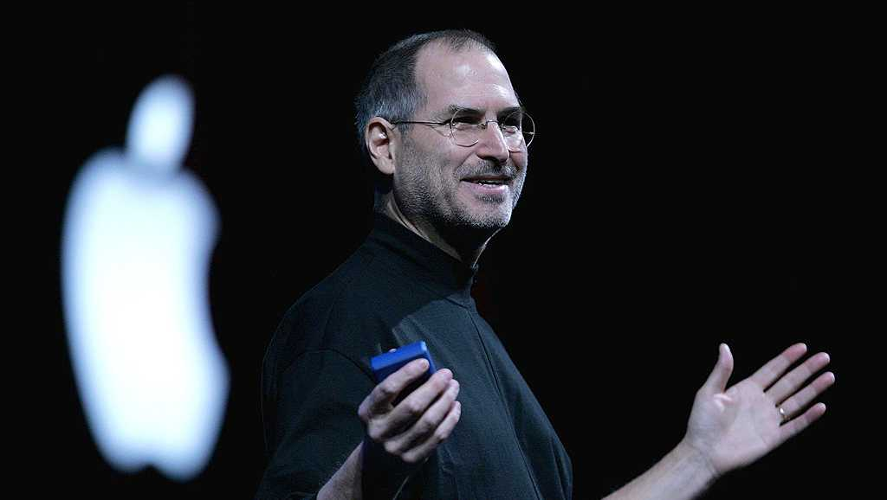

1955-2011
"Design is not just what it looks like and feels like. Design is how it works"
Steven Paul Jobs (February 24, 1955 – October 5, 2011) was an American entrepreneur, industrial designer, business magnate, media proprietor, and investor. He was the co-founder, chairman, and CEO of Apple; the chairman and majority shareholder of Pixar; a member of The Walt Disney Company's board of directors following its acquisition of Pixar; and the founder, chairman, and CEO of NeXT. He is widely recognized as a pioneer of the personal computer revolution of the 1970s and 1980s, along with his early business partner and fellow Apple co-founder Steve Wozniak.